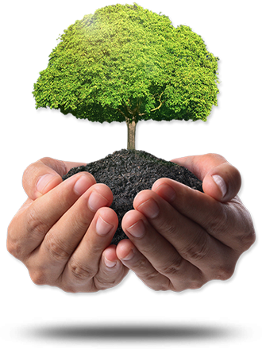
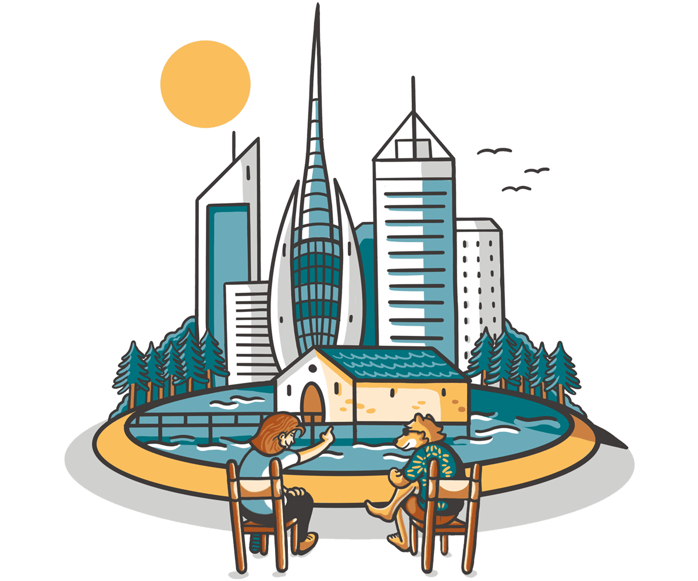

Bienvenidos
Las actividades humanas y el abuso sobre el medio
natural han producido la degradación y pérdida de
numerosas zonas, muchas de ellas con importantes
valores ambientales.
Green Change es una red de colaboración para quienes
estan preocupados por salvaguardar el medio ambiente.
Desarrolla habilidades de pertenencia con el medio,
aprende de la naturaleza y conoce personas.
Opta por colaborar por y para el mundo.



Últimas Noticias
Cambio Climatico
Desde la agricultura, hasta la gestión de envases,
los desechos,la cadena de frío y el transporte, los
sistemas alimentarios emiten miles de millones de
toneladas de dióxido de carbono a la atmósfera cada año.
Leer más
Animales en peligro de extinción
Algunos de los animales más extraños de nuestro planeta
caminan en la cuerda floja de la extinción.
Leer más
Humanidad peligra con destrucción de bosques
Por el Día Internacional de los Bosques, que se conmemoró
el 21 de marzo, expertos en ecosistema de la UNAM exhortan
a la población a reflexionar sobre la importancia del cuidado
de la biodiversidad en nuestro país.
Leer más